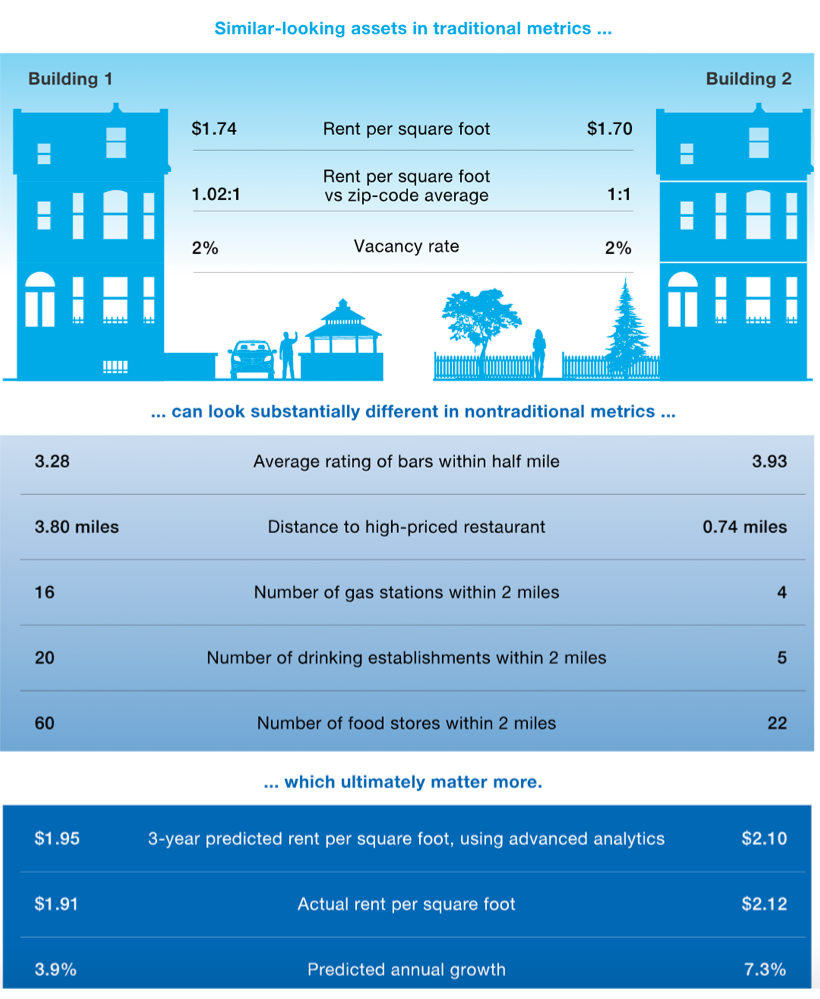
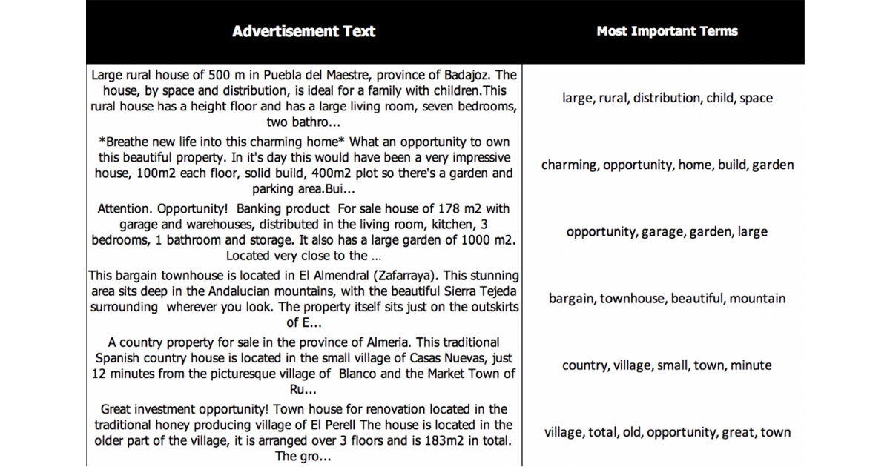

Real Estate
Misc
- Listing Price
- Affects the final selling price, how long the home spends on the market, the volume of interest in the house, and anchors price negotiations with buyers
- Algorithmic estimates have better performances when they take the list price into account
- A home has a value distribution as different potential buyers place different values on the various home features. The eventual selling price is a function of this value distribution and the specific individuals who consider the home.
- Price/Income ratio
- Example: Median house price in middle class suburbia in a very affordable region is $323,000. To maintain an price/income ratio of 3, that requires a household income of $107,000. In 2019, regional median HH income was $62,502. ~30% of HH make over $100K.
Terms
- Price Anchoring - a pricing strategy that plays on buyers’ inherent tendency to rely heavily on a piece of initial information to guide subsequent decisions. In the context of pricing, many businesses will set a visible initial price for a product but make a point of showing that it’s now being sold at a discount.
- Price Index - a normalized average (typically a weighted average) of price relatives for a given class of goods or services in a given region, during a given interval of time
- Case-Shiller U.S. National Home Price Index (also {fredr})
- See Appraisal Methods >> CMA >> Market Price >> Case Shiller
- Wiki has formulas
- See Appraisal Methods >> CMA >> Repeat Sales Model
- If a price index rises 10%, it means the average level of prices has risen 10%
- Case-Shiller U.S. National Home Price Index (also {fredr})
Business Questions
- Agent
- Which house should I buy or build to maximize my return?
- Where or when should I do so?
- What is its optimum rent or sale price?
- Buyer
- Match them with agent
- Find them a home
- Appropriate mortgage
Use Cases
- Using computer vision and NLP to enhance searches
- Incorporating Image Search Capabilities: Extract information from pictures of the property utilizing object detection and image classification techniques, to be used in search matching.
- Recommendation-Engine-Powered Rankings: Search results could be ranked according to the likelihood that the specific user will interact with the results, based on previous searches, profile characteristics, and contextual information.
- Search Intent Matching: Enhance the user experience by adding the ability to write (or dictate) their home preference(s) instead of manually filtering the results. It may be very wise to incorporate such a feature given the rise of home assistants.
- Visual Search: Perform a search based purely on images of homes. This would enhance the search experience or complement the keyword search and produce more accurate and useful results.
- Identify homeowners who are more likely to sell and estimate their selling price using publicly available data
- Find correlations between past sellers and current homeowners, in order to help predict the likelihood that a given owner is willing to sell.
- Estimate appropriate selling price point and the interest of possible future owners so as to increase the chances of successful outreaches.
- Lead classification:
- Based on web-based actions executed by a user, understand where they are at in the customer journey and gather accurate information to move them to the next stage in the funnel.
- Risk assessment:
- Multiple risks should be considered when assessing a real estate transaction. Forecasting models powered by machine learning could complement a traditional risk analysis approach well, especially given their multiple data source analysis capabilities.
- Home valuation:
- A classic, yet constantly evolving, machine learning task is to set the price of a house based on MLS and alternative data (e.g. satellite imagery). The big iBuyers are all betting heavily on this since it’s key to their business model. An example of the level of detail obtainable is that of how Opendoor analyzed the impact of busy roads in their property valuation model.
Appraisal Methods (Price Estimation)
Traditional
- Comparative Market Analysis (CMA)
- a collection of recently sold “comparable” homes (“comps”) that, taken in aggregate, can provide a view on the value distribution of the appraised home (the “subject” home)
- selecting similar properties (in terms of attributes and location) and inferring the target value from the comparables
- Cost Approach
- The “replacement cost” is determined by totaling values such as the value of raw land (again, using comparison), the cost of rebuilding a new building that could perform the function of the existing property, and then making necessary adjustments (e.g., deprecation of the existing building).
- Profits Method (or Income Approach)
- estimates the value of the property based on the income it generates. The value is linked to the business carried out within that property. For example, the market value of a hotel depends on the potential cash flow derived from ownership.
- Repeat Sales Method
- analysis is restricted to just comparing price changes on properties sold more than once
ML Approaches
Misc
- Automated Valuation Models (also known as AVMs) were found to have an absolute error below 4% for homes and below 6% for commercial properties, which is much less than the error rates of traditional appraisals.
Features
- Different predictors may be more valuable for each of the price models.
- Sale price: Zillow and Redfin use their own algorithms for real estate price estimation.
- Rental price: HomeUnion developed a tool called RENTestimate for this.
- Temporary rental price: Airbnb’s pricing tips use a mathematical model that learns how likely a guest is to book a specific listing, on specific dates, at a range of different prices.
- Adding nontraditional data sources can improve estimates

{kind=link}
Hedonic Pricing Method
- A typical regression that accounts for property features such as size, number of rooms, property age, home quality characteristics (granite countertops, air conditioning, pool, etc.), and location
- {hpiR} (vignette)
- It’s just multivariable regression where log sale price (or ppsf, etc.) is the outcome and includes house characteristics and has dummy variables for the years (or days, weeks, etc.) when the house was sold
- The exponential of the coefficients of the year dummy variables are the index and they represent the average change in the outcome variable from the reference year to the year represented by the dummy variable
- 1 is the index of the reference year
CMA with Comp Price Adjustments
Misc
- Notes from
- All models of adjustments seem to use Price per Square Foot (PPSF) for a local area as the outcome variable
- Probably want to go as small an area as you can depending on the amount of training data at that resolution
Process
- Data Scientist Role
- Suggests good comparable properties for a CMA
- Highlights the important differences between the comparable and the subject property (the fewer, the better)
- Suggests pricing adjustments for the differences
- Real Estate Agent Role
- Selects which properties to use as comps
- Selects which adjustments are relevant and appropriate for their CMA report
Market Price
Repeat Sales Model
Estimates how the price-per-square-foot evolved for each locality. Then we can use the model to estimate the difference in average price per square foot (PPSF) in the locality across any two-time points.
If a price index rises 10%, it means the average level of prices has risen 10%
- Example:
- CMA model produces a comp that sold for $1,100,000 almost a year ago in April 2019
- Repeated Sales model’s indexes say that property prices have decreased by 4.6% in area since the sale of this comp.
- Thus, to make this comp comparable now, we would need to subtract $51K (1,100,000 * 0.046 = 50,600) from the price it sold for back in April 2019.
- Example:
In this description and the examples, I’m using sale price, but the same methods can be applied to PPSF.
The data is house id, year sold, sale price
- There will be repeated measures because each house will need to have been sold multiple times.
- Maybe can this be fudged a bit by using really good comps for the repeated measures
- Only the data from the 1st and last sales are used
- The first year in the sample data is NOT included as a variable in the regression
- This is the reference or base year. This year automatically gets an index of 1.
- There will be repeated measures because each house will need to have been sold multiple times.
Assumes homeoskedacity
Specification
Formula:
\[ \log\left(\frac{\mbox{Last Sale Price}}{\mbox{First Sale Price}}\right) = \beta_0 + \beta_1 I(\mbox{year}_1) + \beta_2I(\mbox{year}_2) + \cdots \]
Where \(I(\mbox{year}\_*)\) is an indicator variable with values of
- 1 for year of last sale
- -1 for year of first sale
- 0 for years where the house wasn’t sold
- “*” is the year of the sale of the house.
Note that there is no intercept so will need
0 +in the formula\(e^{β_*}\) gives the index for that year Index for the first year of the sample data is automatically set to 1.
Example
dat <- tibble( y = rep(c(0.182, 0.041, 0.039), 3), year = rep(c("2013", "2014", "2015"), each = 3), value = c(-1, -1, 0, 0, 1, -1, 1, 0, 1) ) %>% tidyr::pivot_wider(names_from = year, values_from = value, names_prefix = "Y") y Y2013 Y2014 Y2015 <dbl> <dbl> <dbl> <dbl> 1 0.182 -1 0 1 2 0.041 -1 1 0 3 0.039 0 -1 1 mod <- lm(y ~ 0 + Y2014 + Y2015, data = dat) Coefficients: Estimate Std. Error t value Pr(>|t|) Y2014 0.07500 0.04808 1.560 0.363 Y2015 0.14800 0.04808 3.078 0.200 exp(coef(mod)) Y2014 Y2015 1.077884 1.159513- “y” is the log of the sales price ratio
- Indexes:
- 2013: 1
- 2014: 1.08
- 2015: 1.16
Case-Shiller Method
Handles heteroskedasticity by Weighted Least Squares
Typically follows the same trend (highly correlated) as the regular repeated sales model but on a lower level
Packages
- Also see Regression, Other >> Weighted Least Squares
- {hpiR}(vignette)
- Multiple modeling options, including weighted regression, robust regression, random forest
- Also splits up houses with more than 2 sales into combinations of binary periods
- *Doesn’t sqrt the residuals in the weighted regression like I think the original paper recommends*
Process
First fit the Repeated Sales Model
Regress the squared residuals on the holding period
\[ \epsilon^2 = \beta_0 + \beta_1 \cdot \mbox{Holding Period} \]
- Holding Period: The period between the first sale and last sale
Calculate weights using fitted values
\[ \mbox{weights} = \frac{1}{\sqrt{\hat{ε^2}}} \]
Fit Weighted Repeated Sales Model
Model
mod <- lm(LogP ~ 0 + ., data = dat %>% select(-HoldingPeriod)) mod_resids <- resid(mod) holding_dat <- dat %>% select(HoldingPeriod) %>% mutate(resids_sq = mod_resids^2) resids_mod <- lm(resids_sq ~ HoldingPeriod, data = holding_dat) resid_preds <- fitted(resids_mod) wgts <- ifelse(resid_preds > 0, 1 / sqrt(resid_preds), 0) final_mod <- lm(LogP ~ 0 + ., data = dat %>% select(-HoldingPeriod), weights = wgts) # indexes exp(coef(final_mod))- Holding Period: the period between the first sale and last sale
- “LogP”: See previous model’s Specification
Building-Floor
- Higher floors in apartment building cost more
- Adjustment varies per building but there isn’t enough training data to have a model per building
- Solution: Bin apartment data by building size, then fit a model for each bin.
- Perform Market Price adjustment to prices before modeling price differences by floor
Location
- Buildings are of different ages, have various contractual constraints, and offer vastly different amenities.
- Example: A subject propert in a very expensive building for this neighborhood. The comp property is in a building where similarly sized apartments tend to sell for lower prices. So an adjustment to the comp needs to be made.
- Spatial nearest neighbor models for ppsf.
- To prepare the training data, we use the Market Price adjustment discussed already
- Packages: {nngeo}
Features
- Also see Feature Engineering, Geospatial
- Data
- American Housing Survey (AHS)
- Zillow - Zillow Home Value Index (ZHVI), Zillow Home Value Forecast (ZHVF), Zillow Observed Rent Index (ZORI), + a bunch of other stuff
- Scrape Traditional Variables
- Number of bedrooms
- Number of bathrooms
- Living area (square footage)
- Price per Square Foot (PPSF)
- Number of Stories
- Year Built
- Property Type (e.g. Condo, House)
- Furnished/Not Furnished
- Fireplace/No Fireplace
- Heating/No Heating
- Pool/No Pool
- Garage Space
- ZIP Code
- Latitude and Longitude
- Listing Price of comparable homes in the area
- Sale Price
- Days on the Market
- Off-Market Data
- Tax Assessments
- Prior Sales and other publicly available records
- Resident Surveys
- Mobile Phone Signal Patterns
- Yelp Reviews of local restaurants help identify “hyperlocal” patterns—granular trends at the city block level rather than at the city level.
- Market Trends
- Inflation
- Seasonality in Demand
- Economic Shocks
- Geographic Indicators
- Uber’s H3 grid system instead of zip codes, etc. (Also see Geospatial, General)
- The quality of local schools
- Employment Opportunities
- Proximity to shopping, entertainment, and recreational centers
- Sources Google Places, Yelp, or SchoolDigger
- Image data
- Satellite Imagery
- Mapbox’s Satellite API
- Allows you to query any location by its latitude and longitude coordinates
- Select from 20 different zoom levels
- 50,000 free requests each month!!
- Number of roads and their condition
- Houses with Pools
- Mapbox’s Satellite API
- Method
- Convolutional Neural Networks (CNNs) can extract visual features, revealing underlying information captured in photos
- Satellite
- A classification network can distinguish between the top and bottom 15% of houses in a dataset to test this. A model achieved an outstanding 91% accuracy, using only satellite images. After interpreting the model to understand which visual patterns governed its decision process, we saw that it placed high importance on recreational areas such as parks and lakes.
- Exterior Frontal Images
- Interior Photos
- Features
- The activeness of a street frontage
- Accessibility of the Area (number of roads, condition of the roads)
- Amount of Urbanization
- {uci} (Urban Centrality Index) - measures the extent to which the spatial organization of a city or region varies from extreme polycentric to extreme monocentric in a continuous scale from 0 to 1.
- Proximity to parks, lakes and beaches (recreational areas)
- Amount of Greenery
- Population Density
- Satellite Imagery
- NLP
- Identify the most important words in a description and learn which words tend to be used to describe more expensive or affordable houses.

- Identify the most important words in a description and learn which words tend to be used to describe more expensive or affordable houses.
- Sociodemographic
- Misc
- Which data resolution is most predictive? (e.g. state, county, neighborhood, etc.)
- Official government data sources are best (consistent, unbiased, and up-to-date indicators, with the largest sample sizes)
- Median Household Income
- Unemployment Rate
- Crime Rate
- Ethnicity
- Number of Inhabitants
- Average Age
- Poverty Level
- Source: American Community Survey (ACS) at census tract level
- Small subdivisions of a county (around 4,000 inhabitants on average),
- Designed to be relatively homogeneous units concerning population characteristics, economic status, and living conditions
- Total Population
- Total Employed Population
- Population Median Age
- Median Household Income
- Population with Income Below Poverty Level
- Minority Percentage
- Vacant Housing Units for Rent
- Median Value for all owner-occupied housing units
- Misc
{kind=link}